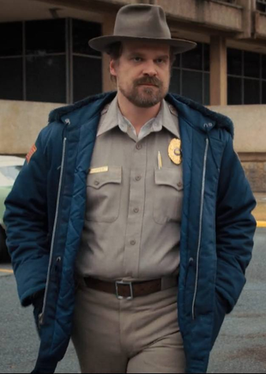

Eleven
Eleven
Eleven is ontsnapt van haar vader die haar en andere kinderen gevangen hield om hun krachten te geven en er mee testen. Ze heeft telekenetische krachten en kan dus dingen laten bewegen met haar brein. Ze woont uiteindelijk bij Hopper.
Will Byers
Will was opeens spoorloos verdwenen. Hij was door een 'demagorgon' ontvoerd naar een alternatieve realiteit genaamd The Upside Down. Zijn vrienden en familie redden hem. Een jaar later wordt hij bezeten door The Mind Flayer.
 Mike Wheeler
Mike Wheeler
Mike is een van de beste vrienden van Will. Hij heeft een zus Nancy die ook mee hielp aan het redden van Eleven met haar vriend Jonothan. Hij wordt uiteindelijk Elevens vriendje.
Dustin Henderson
Dustin is ook een van Wills beste vrienden. Hij heeft een vriendinnetje Suzie die hem heeft geholpen de wereld redden. Hij vond een klein diertje die hij D'artagnan noemde. Later bleek dit een demogorgon te zijn die dus levensgevaarlijk is en iedereen probeert te doden.
Lucas Sinclair
Lucas hielp ook mee met de zoektocht naar Will. Hij kreeg uiteindelijk een relatie met Max. Hij heeft ook een zusje genaamd Erica. Zij kreeg in seizoen 3 een rol waar ze met Dustin, Steve en Robin in een Russische basis bij het Starcourt winkelcentrum.
 Maxine Mayfield
Maxine Mayfield
Max komt in seizoen 2 in de serie als een nieuwe leerling in hun klas. Uiteindelijk krijgt ze een relatie met Lucas. Ze heeft een hele slechte relatie met haar stiefbroer Billy. Billy probeert haar vrienden aan te vallen maar Max stopt hem. Later wordt Billy bezeten door de Mind Flayer en offert hij zichzelf op voor Max en haar vrienden.
 Joyce Byers
Joyce Byers
Joyce is de moeder van Will en Jonothan. Toen Will vermist raakte probeerde Joyce met hem te communiceren via de kerstlichtjes. Later krijgt ze een relatie met Bob. Hij overleedt helaas door de aanval van een demogorgon in het laatste seizoen. Ze krijgt ook romantische gevoelens voor Hopper later.
Jim Hopper
Jim Hopper is een politieagent in Hawkins. Hij hielp daarom dus mee aan de zoektocht naar Will Byers. Hij komt er achter dat de verdwijning van Will komt door experimenten in een lab. Later laat hij Eleven bij hem intrekken, totdat ze wegrent. Hij schijnt later te overlijden maar in het volgende seizoen zullen we dit zeker weten.